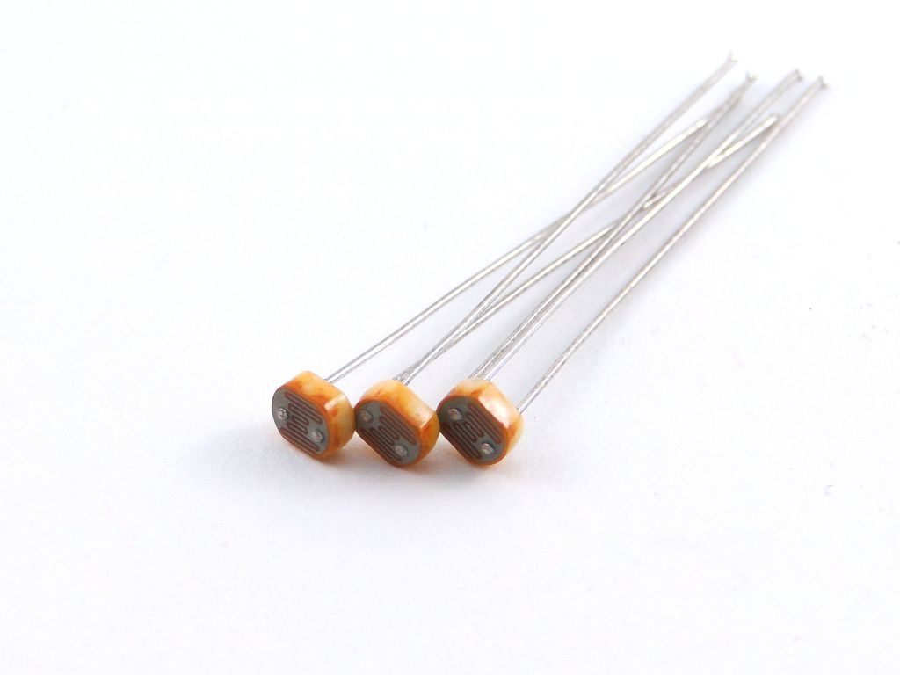
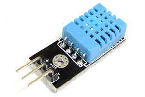
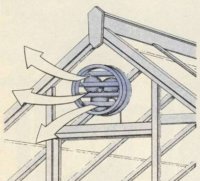
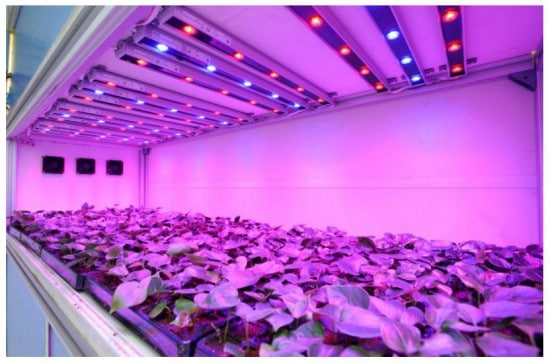

Что мы используем?

Фоторезистор
Солнечный свет – один из наиболее важных для жизни растений экологических показателей. Он поглощается хлорофиллом и используется при построении первичного органического вещества. Фоторезистор-это датчик, электрическое сопротивление которого меняется в зависимости от интенсивности падающего на него света. В нашей системе необходим для для отслеживания
Датчик температуры
Датчик DTH11 необходим для поддежания температуры и влажности в помещении. Датчик состоит из двух частей – емкостного датчика температуры и гигрометра. Первый используется для измерения температуры, второй – для влажности воздуха. Находящийся внутри чип может выполнять аналого-цифровые преобразования и выдавать цифровой сигнал, который считывается посредством микроконтроллера.


Вентиляция. Почему она так необходима?
Дело в том, что без хорошей вентиляции в воздухе могут распространяться разнообразные бактерии. Кроме того, спертый воздух может способствовать загниванию некоторых растений и привести к серьезным заболеваниям. Ряд культур не особенно приятно пахнет во время цветения.
Помимо всего прочего, воздух необходим растениям для дыхания, с его помощью равномерно распространяется углекислый газ и активно протекает фотосинтез.
Освещение для растений
Как известно, свет – одно из главных условий развития всех представителей флоры. Он необходим цветам наравне с поливом и удобрениями. Когда естественного света не достаточно, целесообразно использовать искусственное освещение для растений.
